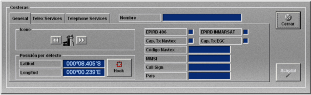
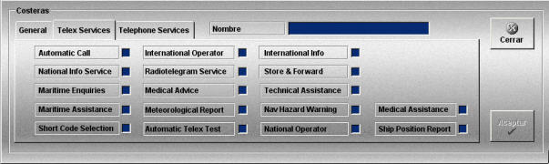
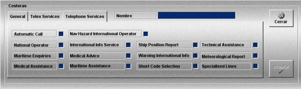
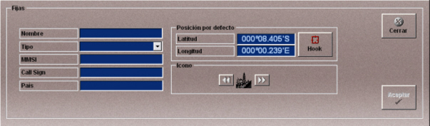

Unidades Fijas
Las unidades fijas se crean con todos los datos necesarios, ya que no llevan plataforma asociada como las móviles. Para completar su definición se añaden los equipos necesarios como se describe en el apartado Preparación de Ejercicios.
La creación y edición de costeras se realiza mediante la ventana Costeras. En esta ventana se especifican los datos de posición e identificación de las unidades, y los distintos servicios Télex y Telefónico de los que disponen.
Seleccionando la solapa General se puede definir el icono, la posición, las capacidades y los códigos de identificación de la estación costera.

Nombre: Nombre de la costera.
Formato: caracteres alfanuméricos.
Icono: En esta zona se puede elegir el icono que va a representar a la unidad en la cartografía. Pulsando en los botones de avance y retroceso anexos al icono se muestra el icono siguiente y el anterior.
Posición por defecto: Posición correspondiente a la estación costera. Puede ser introducida rellenando los campos Latitud y Longitud o situando el hook en la posición deseada y pulsando el botón Hook.
Latitud: Latitud correspondiente a la posición de la unidad fija.
Unidades: grados y minutos con formato ggºmm.mmm’N/S
Rango: 00º00.000’N a 89º59.999’N y 00º00.000’S a 89º59.999’S
Longitud: Longitud correspondiente a la posición de la unidad fija.
Unidades: grados y minutos con formato gggºmm.mmm’E/W
Rango: 000º00.000’E a 179º59.999’E y 00º00.000’W a 179º59.999’W
EPIRB 406: Capacidad de recepción de las señales emitidas por las EPIRB 406.
EPIRB INMARSAT: Capacidad de recepción de las señales emitidas por las EPIRB Inmarsat.
Cap. Tx Navtex: Capacidad de transmisión de mensajes Navtex.
Cap. Tx EGC: Capacidad de transmisión de mensajes EGC.
Código Navtex: Código Navtex de la estación (una letra). Se introducirá si se ha seleccionado la capacidad de transmisión de mensajes Navtex.
MMSI: Identificador del servicio móvil marítimo (Maritime Mobile Service Identity).
Formato: 9 dígitos (ver el sistema de numeración de MSSI que se describe al final del apartado Unidades Móviles).
Call Sign: Distintivo de llamada de la unidad.
Formato: caracteres alfanuméricos.
País: País al que pertenece la unidad.
Formato: caracteres alfanuméricos.
Seleccionando las solapas Servicios Télex y Servicios Telefónicos se puede seleccionar la capacidad de la estación costera para ofrecer los siguientes servicios:
| Servicios Télex: | Servicios Telefónicos: |
|
Automatic Call National Info Service Maritime Enquiries Maritime Assistance Short Code Selection International Operator Radio-telegram Service Medical Advices Meteorological Report Automatic Telex Test International Info Store & Forward Technical Assistance Nav Hazard Warning National Operator Medical Assistance Ship Position Report |
Automatic Call National Operator Maritime Enquiries Medical Assistance Nav Hazard International Operator International Info Service Medical Advices Maritime Assistance Ship Position Report Warning International Info Short Code Selection Technical Assistance Meteorological Report Specialised Lines |


La creación y edición de otras unidades fijas, que no correspondan a estaciones costeras, se realiza mediante la siguiente ventana.

En esta ventana se definen los siguientes datos:
Nombre: Nombre de la unidad.
Formato: caracteres alfanuméricos.
Tipo: Tipo de estación fija. Puede tomar los siguientes valores:
MMSI: Identificador del servicio móvil marítimo (Maritime Mobile Service Identity).
Formato: 9 dígitos (ver el sistema de numeración de MSSI que se describe al final del apartado Unidades Móviles).
Call Sign: Distintivo de llamada de la unidad.
Formato: caracteres alfanuméricos.
País: País al que pertenece la unidad.
Formato: caracteres alfanuméricos.
Posición por defecto: Posición correspondiente a la estación costera. Puede ser introducida rellenando los campos Latitud y Longitud o situando el hook en la posición deseada y pulsando el botón Hook.
Latitud: Latitud correspondiente a la posición de la unidad fija.
Unidades: grados y minutos con formato ggºmm.mmm’N/S
Rango: 00º00.000’N a 89º59.999’N y 00º00.000’S a 89º59.999’S
Longitud: Longitud correspondiente a la posición de la unidad fija.
Unidades: grados y minutos con formato gggºmm.mmm’E/W
Rango: 000º00.000’E a 179º59.999’E y 00º00.000’W a 179º59.999’W
Icono: En esta zona se puede elegir el icono que va a representar a la unidad en la cartografía. Pulsando en los botones de avance y retroceso anexos al icono se muestra el icono siguiente y el anterior.